Chapter 5 Patch
👉 Patch the Vibe in a few short passages: import devices, create fixtures, assign addresses and output the DMX signal.
This chapter deals with creating and patching fixtures.
Chapter index:
- 5.1 Sets
- 5.2 Devices
- 5.3 Create and Patch
- 5.4 DMX Properties
- 5.5 Fixture View
- 5.6 Address Properties
- 5.7 Park
- 5.8 Clone
- 5.9 Replace
- 5.10 Calibration
- 5.11 Trackers
- 5.12 Auto-Patch
5.1 Sets
Vibe contains an extensive Device Library with DMX parameter mapping for fixtures, media servers, and common miscellaneous devices like smoke machines. Before a device can be programmed it must be imported and patched to DMX addresses.
Vibe has an advanced numbering system that allows devices to be grouped into five familiar categories called SETS.
The Default Sets are Fixture, Channel, Spot, Matrix, Media Server. Additional custom SETS may also be created. Fixture numbering in all sets can be freely changed if there are no overlapping numbers. Each Set has a unique ID.
Set ID numbers:
0 = [Fixture] is a special global numbering set that must also reference one of the other sets. All devices must be assigned a Fixture number and one of the other set numbers.
1 = [Channel] is a numbering set that would normally be used for conventional single parameter devices.
2 = [SPOT] is a numbering set that would mainly be used for multi-parameter devices like moving lights.
3 = [MATRIX] is a numbering set that would mainly be used for RGB or other non-moving LED fixtures, also useful for pixel mapping devices.
4 = [SERVER] is a numbering system used for media servers.
Each SET may have Fixtures numbered from 1 ⟶ 999999
To patch a device, you must first move focus to the main monitor and press the [PATCH] Workspace Template key. By default, the first page will contain all the displays needed for patching.
5.2 Devices
Once the Patch Page is open:
Use the Devices view.
Tap {Import}, the Manufactures picker list will appear.
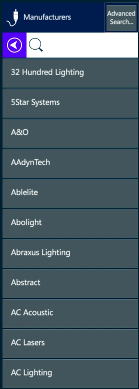
Flick or drag along the list to browse to the desired manufacturer then tap the manufacturer’s name.
A new list and search window will open. If the exact device name is known, type it in the search window, if not flick or drag to browse the list until the desired device is found.
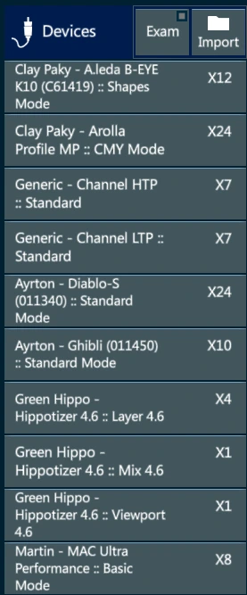
- The < key may be pressed at any time to return to the imported Devices list.
5.2.1 Advanced Search
Fixtures may be searched directly by name using the Advanced Device Search.
Searches may be filtered by parameter order and DMX Channel Count to limit the search.
👉 The filters are very helpful in finding close matches for fixtures that are not currently in the device library.
To access Advanced Search:
Tap {Import} on the Devices view header - The tab will show {Advanced Search}.
Tap {Advanced Search} - The Advanced Search Pop-up will appear.
Type the fixture’s name in the Fixture Name box, set the number of channels, or select the parameters to filters the devices database.
Select the fixture from the Matching Devices list.
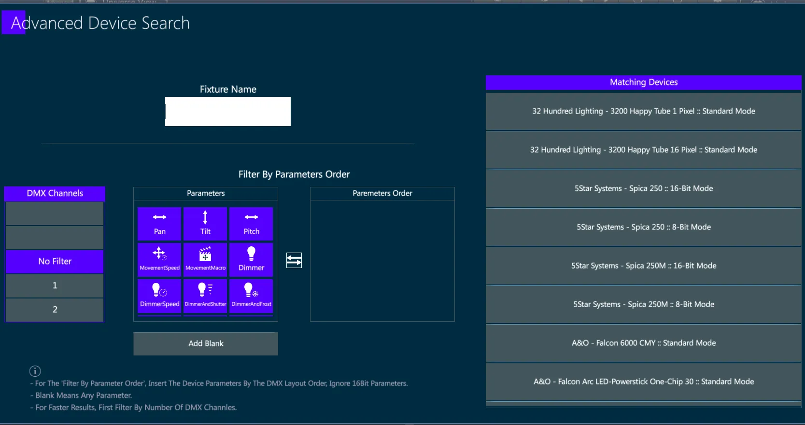
The DMX Modes pop-up will open.
Review the DMX chart and select the desired mode.
Tap Apply or Import or press [ENTER] to close the popup and add the fixture to the Imported Devices list.
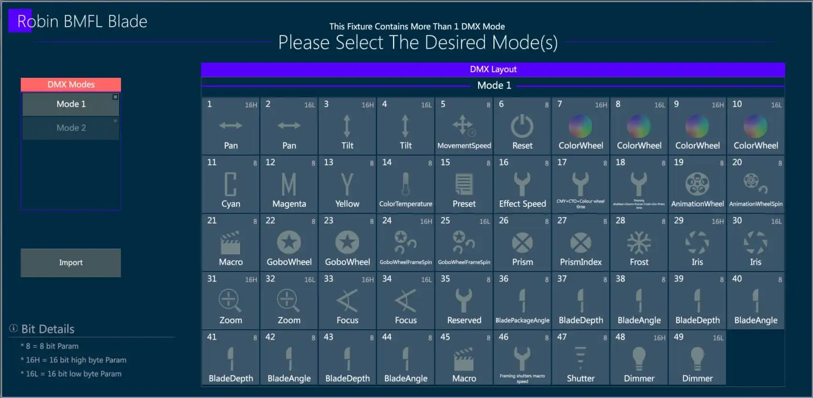
5.3 Create and Patch
To open the Create and Patch popup:
Import the desired device.
The device will now be in the list below the Imported Devices header.
Tap the device you wish to patch and the Create and Patch Fixtures popup will appear.
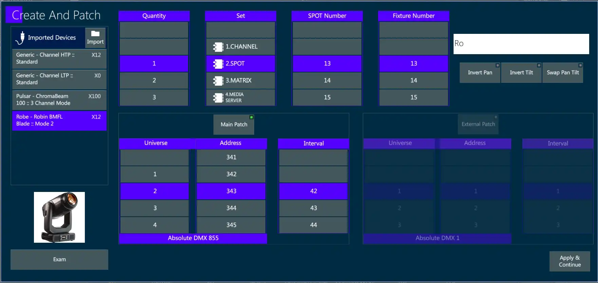
To Create and Patch fixtures:
In the Create and Patch pop-up, type the quantity in the red highlighted field via the keypad or flick/drag to browse the list until the desired quantity number is found then tap the number.
If the Quantity number is not highlighted in Red, tap the field to make it active.
Press the ⟶ key on the keypad to tab to the next field, or tap in the {SET} field. The appropriate SET for the selected fixture should automatically be selected, but as some fixtures don’t always cleanly fit into standard categories, check that the correct Set is selected. If not, flick/drag to browse to the correct SET then tap it. You may also type the Set number (0-5).
Press the ⟶ key on the keypad to tab to the {Set Number} field.
Set the Channel, Spot, Matrix, or Server number for the fixture in the red highlighted field using the keypad or scroll to browse the list until the desired start number is found, then tap the number. 👉 By default, the first available number for the selected SET is pre-assigned.
Press the ⟶ key on the keypad to tab to the next field, or tap any box in the Fixture Number field to select it.
By default, the same number as the SET Number will appear as the Fixture Number. Many users like to group Fixtures by 10ʼs or 100ʼs so it is common to type 101 for the start of one type of fixture, 201 for a second type and so on. The SET number and Fixture number do not have to be the same.
Next to the Fixture Number field is a data entry box that displays the fixture’s default short name. This may be edited at any time while in this pop-up. The name will be updated when the fixtures are created upon closing the popup.
In the second section of the pop-up, fixtures that were selected for creation can be patched via the DMX patch wizard. Press the ⟶ key on the keypad to tab to the next field, or tap a number in the UNIVERSE field. If the desired universe is not visible, flick/drag to browse to the correct universe number then tap it.
Press the ⟶ key on the keypad to tab to the next field, or tap any number in the ADDRESS field.
👉 By default, the interval between fixtures of the same type is fixed. Using the INTERVAL field, a custom interval may be set.
- To complete CREATE and PATCH tap the {APPLY & CONTINUE} key in the bottom right corner of the popup, Press [ENTER], or tap Apply to close the popup and return to the patch workspace.
Theatrical Multi-Patching can also be done manually using keypad syntax:
- Toggle off the {MAIN PATCH} key at the top of the DMX patch wizard before closing the pop-up. The fixtures will be created but will remain unpatched.
To Patch fixtures using traditional keypad syntax:
- [FIXTURE] [#] [ADDRESS] [#].[#]
👉 By default, the first available DMX address of the selected Universe will be shown in the ADDRESS field. If the default start address is not appropriate, type or scroll the list to the desired start address and tap it.Universe.Address, [STORE]. Or
- [ADDRESS] [#].[#] +/ - ⟶ [#].[#] [FIXTURE] [#] [STORE].
👉 Addresses may also be typed in absolute format: 1 ⟶ 32,768 (64 Universes standard). The system will automatically assign the correct universe.
👉 When starting from a {New Show} only {Physical DMX outputs} are enabled. Network universes must be enabled in PATCH {DMX Settings}
5.3.1 Drag and Drop Patch
If {Main Patch} is toggled off in the Create and Patch pop-up, fixtures can be created but not patched. Created fixtures may then be dragged and dropped onto the Universe View.
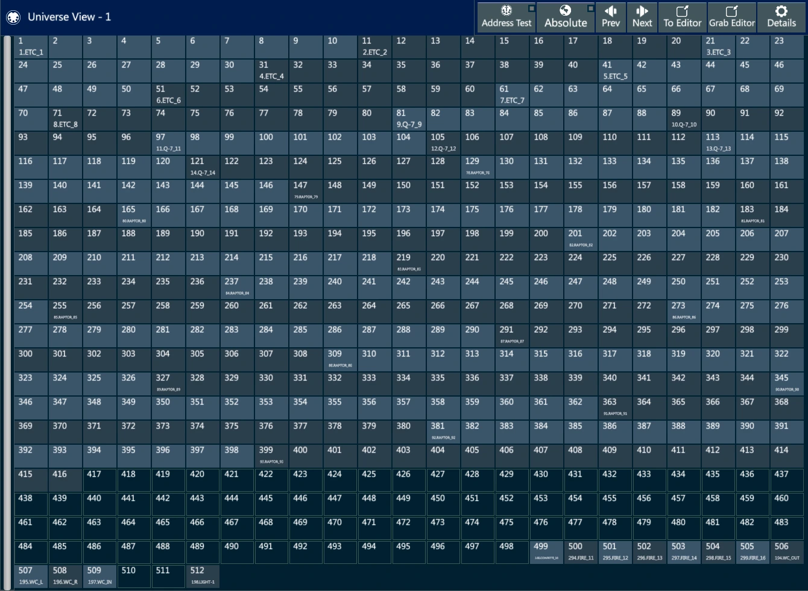
Drag and Drop from the Fixtures tab:
Create fixtures.
Select the Fixture Set you wish to patch from the Set list.
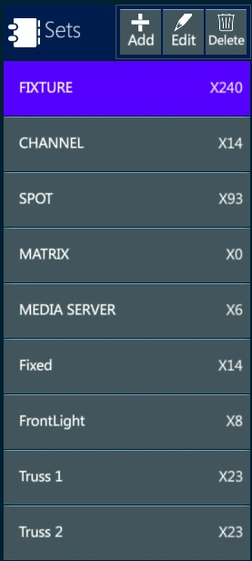
- Select a destination Universe from the Universes list. The universe grid will be shown in the Universes view.
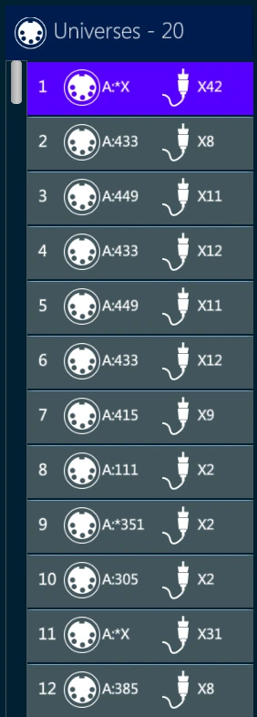
- Select the Fixtures you wish to patch from the Fixtures list. 👉 Multiple fixtures may be selected by swiping ⤴ or ⤵ in the Fixtures list.
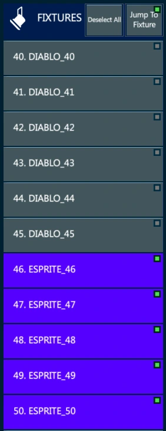
Press and Hold the fixtures, they will turn into floating icons.
Drag the fixture icons from the Fixtures view onto the Universe View grid. All associated DMX addresses will turn green. Drop the fixture icon on the desired DMX start address
The fixtures are now patched.
Make multiple selections of fixtures using the keypad:
Type a range of fixtures using the keypad - the fixture selection will be displayed numerically in the Selection box.
Press and Hold anywhere in the Selection box - a fixture icon will appear.
Drag the icon to the Universe View grid and drop it at the destination start address.
The range of fixtures is now patched.
Multi-Patch using Drag and Drop:
- Drag and drop the same fixture to multiple DMX offsets.
👉 All types of fixtures may be multi-patched but caution should be used when multi-patching multi-parameter fixtures.
Unpatch fixtures using drag and drop:
Press and Hold any patched DMX offset - The DMX addresses for the fixtures patched to it will turn green and a fixture icon will be shown.
Drag the selected block of fixtures towards the bottom of the screen - a waste bin icon will appear.
Drag the block until the icon is over the waste bin and drop the fixtures.
The fixtures are now unpatched.
5.3.2 Modify Patch
Once patched fixtures can be modified using keypad syntax or using the Patch Toolbar.
{CLEAR PATCH} - Opens the Clear Patch popup.
{DELETE FIXTURE} - Opens the Delete Fixtures popup.
{CLONE} - Opens the Fixture Cloning popup.
{REPLACE} - Opens the Device Replacement popup.
{ADD FIXTURE} - Opens the Create And Patch popup.
{PATCH} - Opens the Patch Fixture popup.
{RENUMBER} - Opens the Renumber Fixture popup.
{AUTO GENERATE} - Opens the Auto Generate popup.
{FIXTURE CALIBRATION} - Opens the Fixture Calibration popup.
Modify the patch using keypad syntax:
[FIXTURE] [#] {CLEAR PATCH} - From the Editor toolbar.
[FIXTURE] [#] [DELETE] - Only works in the Patch Page.
5.3.3 Address Test
Sometimes, especially in theatrical environments, it is useful to check if a DMX channel is empty or not. This can be done from the console by enabling the Address Test function on the header of the Universe View.
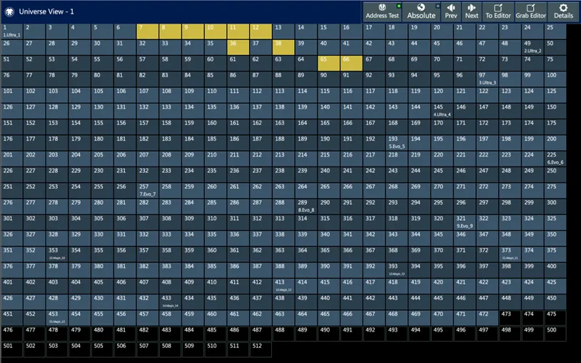
In Address Test mode each selected channel is visualized with a yellow background and it is forced to jump at full intensity.
Many channels can be selected by dragging or through multiple touches.
[RESET] releases the channels and disables the Address Test function.
Once the function is disabled all the channels come back to their normal state.
5.4 DMX Properties
The DMX Properties is divided in 4 sections corresponding to the 4 output types supported:
Local Output: the physical DMX port embedded in the console.
VC’s: Compulite proprietary protocol for DMX over Ethernet.
ArtNet: The most diffused protocol for DMX over Ethernet used for lighting fixture control.
sACN: The most diffused protocol for DMX over Ethernet used for lighting fixture control and communication with other equipment related to show lighting (such as Tracking systems).
Most of the options and configuration properties are common to all the protocols, but a few of them are specific to the selected protocol and will be grayed out or not available.
Vibe is capable of transmitting more DMX-over-Ethernet protocols at a time on the same network from the Data port.
To save bandwidth it is also possible to enable only the universes for each protocol that are required.
Vibe has separate universe patches for Local, VCs, Art-Net, and sACN.
By default, on each protocol universes are patched on a 1:1 basis.
It is possible to reroute universe output destinations.
DMX can be remapped as needed to anyone of the supported 256 DMX universes.
The Vibe console is licensed to output from 64 up to 256 source universes, but these universes may be freely rerouted to any destination universe from 0 ⟶ 256 as long as the total amount of universes does not exceed the purchased license.
Available Universes
In the bottom left of the popup, a red framed box informs about the amount of universes that the system can output on each protocol.
This number is based on the connected devices, summing each device universes to reach the system’s total amount:
- Vibe PC software by default enables up to 64 universes on VC’s protocol and up to 1 universe on ArtNet and ACN protocols.
👉 If no PC Wing is connected to the Vibe PC, then the VibePC works in Demo Mode and the ArtNet and ACN protocols will get random 10 seconds blackouts, advised by a Red box on the toolbar. VC’s protocol is not affected by the random blackouts.
- Vibe consoles by default enable up to 64 input and output universes.
👉 Vibe consoles support up to 256 universes output; to expand the 64 default universes the console needs to install a Universe Licence. Not implemented yet..
Vibe consoles Local Universes depend on the quantity of embedded DMX ports.
Vibe (and Vector) PC Wings add up to 16 input and output universes on ArtNet and ACN protocols.
ePort8 Nodes add up to 8 input and output universes on ArtNet and ACN protocols.
ePort41 Nodes add up to 5 input and output universes on ArtNet and ACN protocols.
ePort2 Nodes add up to 2 input and output universes on ArtNet and ACN protocols.
5.4.1 Local Output
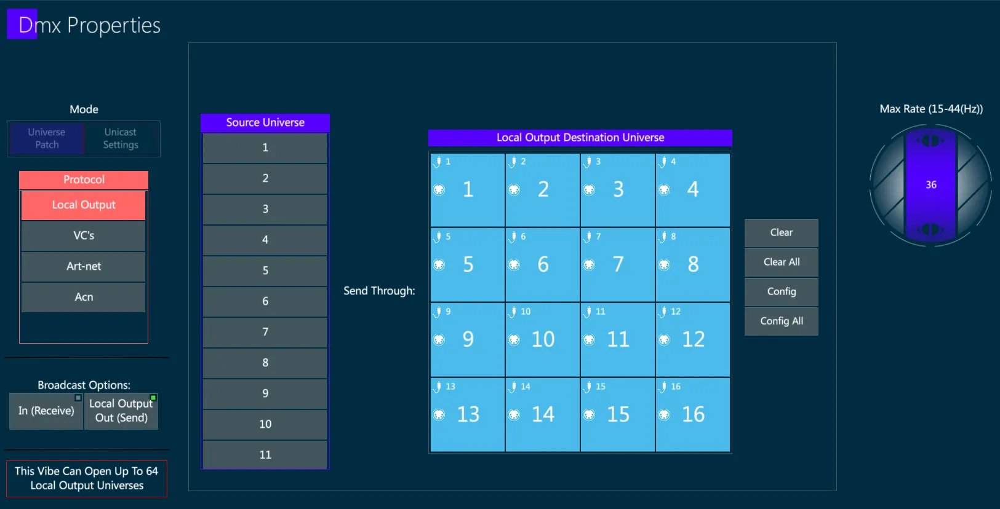
Enable Local Input / Output
Use the Broadcast Option keys to enable / disable the Input and the Output, to either receive or send the protocol.
When the green dot is shown on the key, the protocol is set as enabled. Tap apply to activate it.
To Enable Output:
- Open the {DMX SETTINGS} from Vibe Menu > Settings or tap the DMX Settings button - The DMX Properties popup will open.
Tap on the Protocol heading in the Protocol column - The selection will turn red.
Under Broadcast Options tap {Out (Send)} - The status indicator light will turn green.
- The console can now output the selected protocol on the DMX ports.
To Enable Input:
- Open the {DMX SETTINGS} from Vibe Menu > Settings or tap the DMX Settings button - The DMX Properties popup will open.
Tap on the Protocol heading in the Protocol column - The selection will turn red.
Under Broadcast Options tap {In (Receive)} - The status indicator light will turn green.
- The console can now get input of the selected protocol on the DMX ports.
Map Console Universes
Toggle between In (Receive) and Out (Send) on the top of the view to either show the input or the output universes configuration in the destination universe box.
Under the Source Universe header, scroll the list to the source console universe number you wish to route. Once tapped, the selection will turn red. A universe number may also be typed from the keypad.
Under the Destination Universe header, tap one of the cells in the destination universe grid. The source universe number will now be routed through the destination universe number.
Additional functions
👉 Use the Clear All and the Config All keys to remap the protocol on a 1:1 basis.
Clear a destination universe - Tap {Universe #} in the destination grid. Tap {Clear}.
Clear all destination universes - Select the protocol to clear. Tap {Clear All}.
Config default route for a single destination universe - Tap {Universe #} Tap {Config}.
Config all default destination universes for the selected protocol - Tap {Config All}.
DMX refresh rate
Sometimes older equipment cannot handle the higher refresh rates, so it may be reduced with the DMX Max Rate wheel. It is not recommended to go below 28Hz as some flickering may be observed.
👉 If VibePC is used to control an external software, such as a lighting visualizer, running on the same computer, the Local Outputs are used to communicate the VC’s protocol to the other software using the loopback IP address 127.0.0.1.
5.4.2 VC
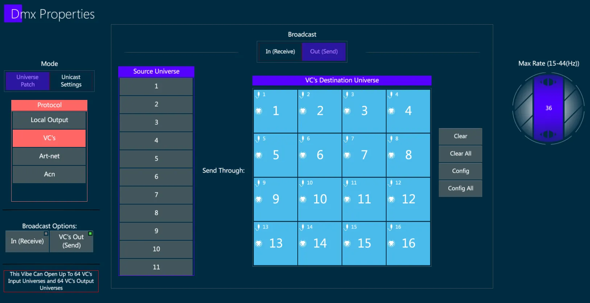
Enable VCs Input / Output
Use the Broadcast Option keys to enable / disable the Input and the Output, to either receive or send the protocol.
When the green dot is shown on the key, the protocol is set as enabled. Tap apply to activate it.
To Enable Output:
- Open the {DMX SETTINGS} from Vibe Menu > Settings or tap the DMX Settings button - The DMX Properties popup will open.
Tap on the Protocol heading in the Protocol column - The selection will turn red.
Under Broadcast Options tap {Out (Send)} - The status indicator light will turn green.
- The console can now output the selected protocol on the DMX ports.
To Enable Input:
- Open the {DMX SETTINGS} from Vibe Menu > Settings or tap the DMX Settings button - The DMX Properties popup will open.
Tap on the Protocol heading in the Protocol column - The selection will turn red.
Under Broadcast Options tap {In (Receive)} - The status indicator light will turn green.
- The console can now get input of the selected protocol on the DMX ports.
Map Console Universes
Toggle between In (Receive) and Out (Send) on the top of the view to either show the input or the output universes configuration in the destination universe box.
Under the Source Universe header, scroll the list to the source console universe number you wish to route. Once tapped, the selection will turn red. A universe number may also be typed from the keypad.
Under the Destination Universe header, tap one of the cells in the destination universe grid. The source universe number will now be routed through the destination universe number.
Additional functions
👉 Use the Clear All and the Config All keys to remap the protocol on a 1:1 basis.
Clear a destination universe - Tap {Universe #} in the destination grid. Tap {Clear}.
Clear all destination universes - Select the protocol to clear. Tap {Clear All}.
Config default route for a single destination universe - Tap {Universe #} Tap {Config}.
Config all default destination universes for the selected protocol - Tap {Config All}.
DMX refresh rate
Sometimes older equipment cannot handle the higher refresh rates, so it may be reduced with the DMX Max Rate wheel. It is not recommended to go below 28Hz as some flickering may be observed.
Unicast
By default the protocol transmission is Broadcast, if a Unicast or Multicast transmission needs to be set, tap on the Unicast Settings toggle key. It is possible to set specific IPs to send the output to. If there is a port configured to a specific IP it will not be sent broadcast.
The Unicast Settings allow to Add or Delete the IP addresses that will be used for the Unicast or Multicast transmission.
Any IP address may receive the whole protocol with all its universes, or only a part of it as defined in the “From Port” and “To Port” fields.
Each port can be configured to multiple IPs, more ports can be sent to the same IP.
- To Configure Unicast:
Tap on the protocol in DMX Settings popup.
Toggle to Unicast Settings to open the unicast popup.
Tap Add to add a new IP line or Delete to remove an existing IP
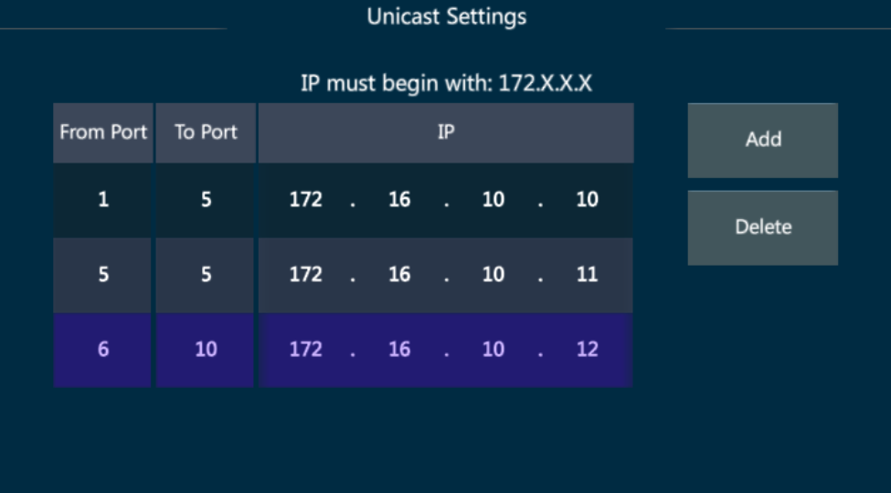
On the first line – ports 1 ⟶ 5 will be sent to IP 172.16.10.10
On the second line – port 5 will be sent also to IP 172.16.10.11
On the third line – ports 6 ⟶ 10 will be sent to IP 172.16.10.12
👉 Any IP may be configured, but it must have the first number in the same range of the Vibe’s Data Network IP, which is reported on the top of the list.
- To Configure Broadcast:
Ports that are not defined as Unicast will be still sent as Broadcast.
Use Broadcast / Use Unicast toggle keys on the top of the {Unicast Settings} tab switch the protocol transmission between unicast and broadcast.
👉 The {Use Broadcast} key ignores the unicast configuration of ports and IP addresses, so it permits sending the protocol in broadcast without losing the unicast configuration made. Once the transmission needs to be restored to unicast, simply tap on the {Use Unicast} key.
5.4.3 ArtNet
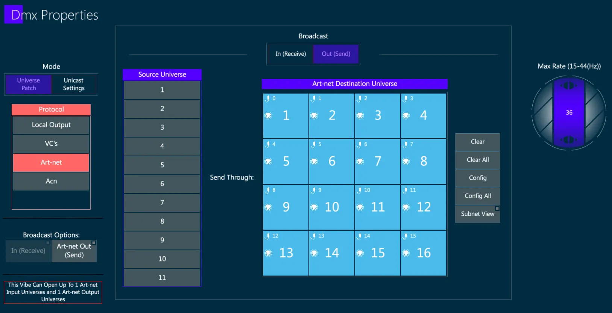
Enable ArtNet Input / Output
Use the Broadcast Option keys to enable / disable the Input and the Output, to either receive or send the protocol.
When the green dot is shown on the key, the protocol is set as enabled. Tap apply to activate it.
To Enable Output:
- Open the {DMX SETTINGS} from Vibe Menu > Settings or tap the DMX Settings button - The DMX Properties popup will open.
Tap on the Protocol heading in the Protocol column - The selection will turn red.
Under Broadcast Options tap {Out (Send)} - The status indicator light will turn green.
- The console can now output the selected protocol on the DMX ports.
To Enable Input:
- Open the {DMX SETTINGS} from Vibe Menu > Settings or tap the DMX Settings button - The DMX Properties popup will open.
Tap on the Protocol heading in the Protocol column - The selection will turn red.
Under Broadcast Options tap {In (Receive)} - The status indicator light will turn green.
- The console can now get input of the selected protocol on the DMX ports.
Map Console Universes
Toggle between In (Receive) and Out (Send) on the top of the view to either show the input or the output universes configuration in the destination universe box.
Under the Source Universe header, scroll the list to the source console universe number you wish to route. Once tapped, the selection will turn red. A universe number may also be typed from the keypad.
Under the Destination Universe header, tap one of the cells in the destination universe grid. The source universe number will now be routed through the destination universe number.
Additional functions
👉 Use the Clear All and the Config All keys to remap the protocol on a 1:1 basis.
Clear a destination universe - Tap {Universe #} in the destination grid. Tap {Clear}.
Clear all destination universes - Select the protocol to clear. Tap {Clear All}.
Config default route for a single destination universe - Tap {Universe #} Tap {Config}.
Config all default destination universes for the selected protocol - Tap {Config All}.
DMX refresh rate
Sometimes older equipment cannot handle the higher refresh rates, so it may be reduced with the DMX Max Rate wheel. It is not recommended to go below 28Hz as some flickering may be observed.
Unicast
By default the protocol transmission is Broadcast, if a Unicast or Multicast transmission needs to be set, tap on the Unicast Settings toggle key. It is possible to set specific IPs to send the output to. If there is a port configured to a specific IP it will not be sent broadcast.
The Unicast Settings allow to Add or Delete the IP addresses that will be used for the Unicast or Multicast transmission.
Any IP address may receive the whole protocol with all its universes, or only a part of it as defined in the “From Port” and “To Port” fields.
Each port can be configured to multiple IPs, more ports can be sent to the same IP.
- To Configure Unicast:
Tap on the protocol in DMX Settings popup.
Toggle to Unicast Settings to open the unicast popup.
Tap Add to add a new IP line or Delete to remove an existing IP
On the first line – ports 1 ⟶ 5 will be sent to IP 172.16.10.10
On the second line – port 5 will be sent also to IP 172.16.10.11
On the third line – ports 6 ⟶ 10 will be sent to IP 172.16.10.12
👉 Any IP may be configured, but it must have the first number in the same range of the Vibe’s Data Network IP, which is reported on the top of the list.
- To Configure Broadcast:
Ports that are not defined as Unicast will be still sent as Broadcast.
Use Broadcast / Use Unicast toggle keys on the top of the {Unicast Settings} tab switch the protocol transmission between unicast and broadcast.
👉 The {Use Broadcast} key ignores the unicast configuration of ports and IP addresses, so it permits sending the protocol in broadcast without losing the unicast configuration made. Once the transmission needs to be restored to unicast, simply tap on the {Use Unicast} key.
SubNet view
ArtNet is designed in blocks of 16 universes.
The blocks starts at subnet 0 and increments by 1 every 16 universes.
The subnet number and fixture number in the subnet can be viewed by toggling {Subnet View}.
Enable the Subnet view through the dedicated key on the right of the destination universe box to visualize the subnet number instead of the universe number on the ArtNet universes.
5.4.4 sACN
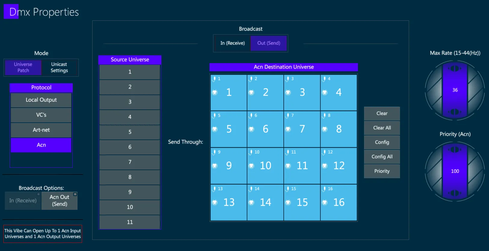
Enable sACN Input / Output
Use the Broadcast Option keys to enable / disable the Input and the Output, to either receive or send the protocol.
When the green dot is shown on the key, the protocol is set as enabled. Tap apply to activate it.
To Enable Output:
- Open the {DMX SETTINGS} from Vibe Menu > Settings or tap the DMX Settings button - The DMX Properties popup will open.
Tap on the Protocol heading in the Protocol column - The selection will turn red.
Under Broadcast Options tap {Out (Send)} - The status indicator light will turn green.
- The console can now output the selected protocol on the DMX ports.
To Enable Input:
- Open the {DMX SETTINGS} from Vibe Menu > Settings or tap the DMX Settings button - The DMX Properties popup will open.
Tap on the Protocol heading in the Protocol column - The selection will turn red.
Under Broadcast Options tap {In (Receive)} - The status indicator light will turn green.
- The console can now get input of the selected protocol on the DMX ports.
Map Console Universes
Toggle between In (Receive) and Out (Send) on the top of the view to either show the input or the output universes configuration in the destination universe box.
Under the Source Universe header, scroll the list to the source console universe number you wish to route. Once tapped, the selection will turn red. A universe number may also be typed from the keypad.
Under the Destination Universe header, tap one of the cells in the destination universe grid. The source universe number will now be routed through the destination universe number.
Additional functions
👉 Use the Clear All and the Config All keys to remap the protocol on a 1:1 basis.
Clear a destination universe - Tap {Universe #} in the destination grid. Tap {Clear}.
Clear all destination universes - Select the protocol to clear. Tap {Clear All}.
Config default route for a single destination universe - Tap {Universe #} Tap {Config}.
Config all default destination universes for the selected protocol - Tap {Config All}.
DMX refresh rate
Sometimes older equipment cannot handle the higher refresh rates, so it may be reduced with the DMX Max Rate wheel. It is not recommended to go below 28Hz as some flickering may be observed.
Unicast
By default the protocol transmission is Broadcast, if a Unicast or Multicast transmission needs to be set, tap on the Unicast Settings toggle key. It is possible to set specific IPs to send the output to. If there is a port configured to a specific IP it will not be sent broadcast.
The Unicast Settings allow to Add or Delete the IP addresses that will be used for the Unicast or Multicast transmission.
Any IP address may receive the whole protocol with all its universes, or only a part of it as defined in the “From Port” and “To Port” fields.
Each port can be configured to multiple IPs, more ports can be sent to the same IP.
- To Configure Unicast:
Tap on the protocol in DMX Settings popup.
Toggle to Unicast Settings to open the unicast popup.
Tap Add to add a new IP line or Delete to remove an existing IP
On the first line – ports 1 ⟶ 5 will be sent to IP 172.16.10.10
On the second line – port 5 will be sent also to IP 172.16.10.11
On the third line – ports 6 ⟶ 10 will be sent to IP 172.16.10.12
👉 Any IP may be configured, but it must have the first number in the same range of the Vibe’s Data Network IP, which is reported on the top of the list.
- To Configure Broadcast:
Ports that are not defined as Unicast will be still sent as Broadcast.
Use Broadcast / Use Unicast toggle keys on the top of the {Unicast Settings} tab switch the protocol transmission between unicast and broadcast.
👉 The {Use Broadcast} key ignores the unicast configuration of ports and IP addresses, so it permits sending the protocol in broadcast without losing the unicast configuration made. Once the transmission needs to be restored to unicast, simply tap on the {Use Unicast} key.
Priority
ACN universes may have a priority to manage networks where more than one source is transmitting sACN.
Turn the Priority wheel, or select it and give a numeric input, to configure the whole protocol’s priority.
Tap on a destination universe box and then tap on the Priority key to open the Port Priority popup and set a priority to the specific selected universe.
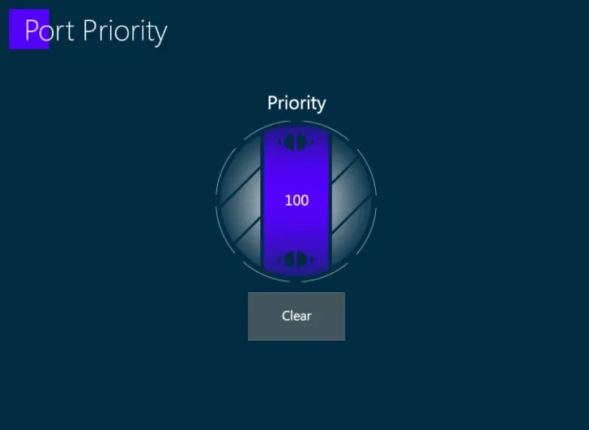
5.4.5 DMX Input
The following objects may be mapped to DMX inputs
DMX input mapped directly to the console’s DMX outputs
DMX input mapped to Fixtures
DMX input mapped to Controllers
DMX input mapped to Macros
Map a DMX output to a DMX input
Press [ADDRESS] [#]
Tap {INPUT PATCH TO} on the toolbar - Command line will say INPUT PATCH TO
Press [ADDRESS] [#]
Press [STORE]
[ADDRESS] [1] {INPUT PATCH TO} [ADDRESS] [1] [STORE] - When DMX 1 is received from an external source like a console, DMX 1 will directly output to the Vibe DMX output. No values will be shown in the live display as no actual parameters are involved.
Map a range of DMX outputs to a range of DMX inputs
Press [ADDRESS] [#] ⟶ [#]
Tap {INPUT PATCH TO} on the toolbar - Command line will say INPUT PATCH TO.
Press [ADDRESS] [#] ⟶ [#]
Press [STORE]
Map a Fixture to a DMX input
Press [ADDRESS] [#]
Tap {INPUT PATCH TO} on the toolbar - command line will say INPUT PATCH TO
Press [Fixture] [#]
Press [STORE]
DMX inputs will automatically be mapped to all the fixtures parameters starting at the specified address. [ADDRESS] [1] [FIXTURE] [1] (A fixture with 42 parameters) [STORE] will automatically match the 42 parameters to input addresses 1 → 42. The next fixture would have to be mapped starting at address 43.
Map a controller to a DMX input
Press [ADDRESS] [#]
Tap {INPUT PATCH TO} on the toolbar - Command line will say INPUT PATCH TO.
Press [PLAY-B] (Controller) - The Controller Selection popup will appear.
Choose the Controller Type, Page Number, and Controller number from the popup.
Press ENTER, or tap Apply to close the popup and complete the patch.
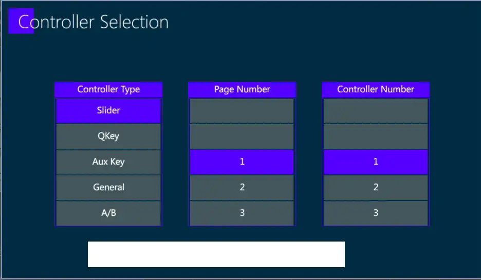
Map a Macro to a DMX input - Macro will trigger at 50%
Press [ADDRESS] [#].[#]
Tap {INPUT PATCH TO} on the toolbar - Command line will say INPUT PATCH TO.
Press [MACRO] [#]
Press [STORE]
Delete a DMX Input patch assignment
Press [ADDRESS] [#]
Tap {INPUT PATCH TO} on the toolbar - Command line will say INPUT PATCH TO
Press [DELETE]
5.5 Fixture View
- The fixture view lists all the created fixtures and their patch information.
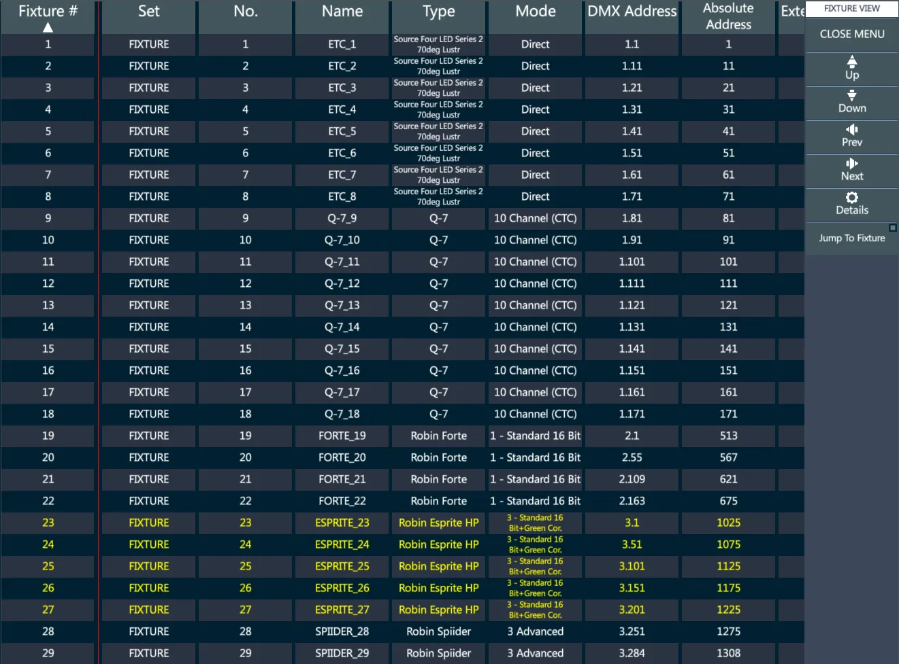
Select a Set on the Sets View to filter the fixtures listed.
Use the Fixture# column to select the fixtures and the [DESELECT] button to release the selection. Selected fixtures will be highlighted in yellow.
Renumber Fixtures
- Tap on the Set or on the Set number column of a fixture selection, or tap the {RENUMBER} key on the patch toolbar, to change the fixture Set and ID.
Rename Fixtures
Tap on the name column of a fixture selection to change the fixture Name.
Renaming multiple fixtures at once is possible by using the # at the end of the text.
Re-patch Fixtures
- Tap on the DMX Address column of a fixture selection, or tap the {PATCH} key on the patch toolbar, to change the fixture address.
Change Fixtures’ Mode
Tap on the Mode column of a fixture selection to change the fixture mode.
Different personalities of the same device need to be imported in the show.
Invert Pan/Tilt
- Tap on the Pan Invert, Tilt Invert, Pan/Tilt Swap columns of a fixture selection to change the fixture position parameters’ behavior.
5.6 Address Properties
The address view lists all the DMX addresses of the selected universe and their properties.
Each cell contains the properties of a DMX address and the icon of the parameter patched on it.
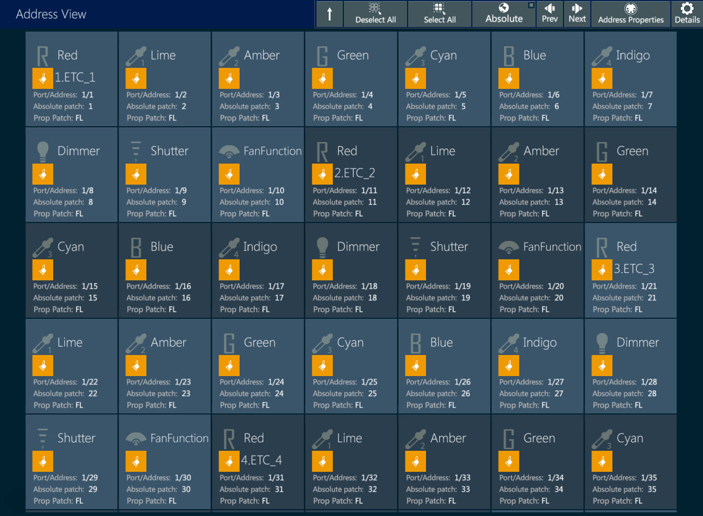
- To edit address properties, tap on the addresses to select them and then “Address Properties” on the header. The Address Properties popup will open.
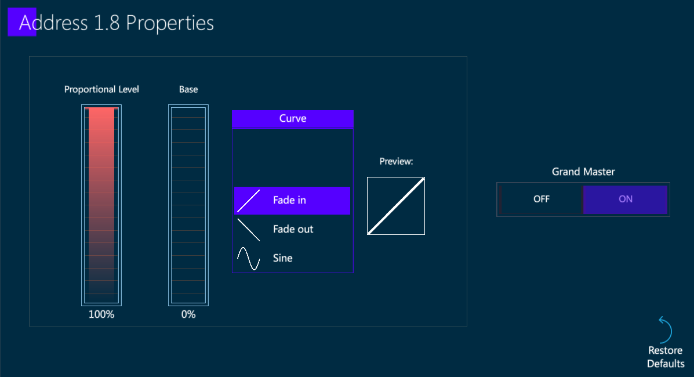
The following address properties can be edited:
Proportional Level: limits the highest value that the address can reach.
Base: limits the lowest value that the address can reach.
Curve: assigns to the address a specific curve. Default is a Fade In curve.
Grand Master: defines if the address is under the Grand Master’s control. Default is ON for the dimmer parameters and OFF for the other parameters.
Restore Defaults: restores the default address properties.
5.7 Park
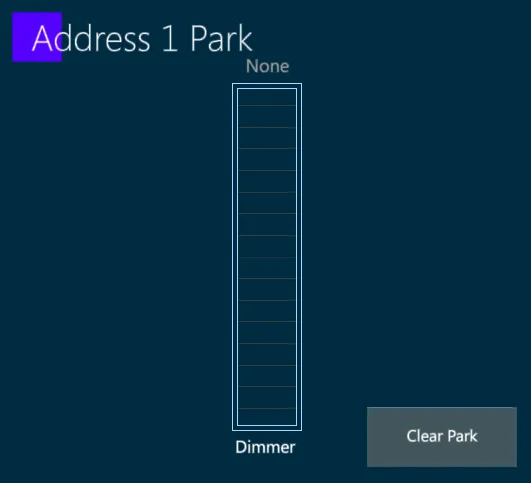
Park an address:
[ADDRESS] [#] {PARK} - The Park popup will appear.
Set a DMX level from 0 ⟶ 255 using the virtual slider.
Tap Apply or press [ENTER] to close the popup and park the address.
Unpark an address:
[ADDRESS] [#] {PARK} - The Park popup will appear.
Tap {Clear Park}.
Tap Apply or press [ENTER] to close the popup and unpark the address.
Park a fixture:
- [FIXTURE] [#] {PARK} [STORE]
Fixture will now be parked at the current values.
Unpark a fixture:
- [FIXTURE] [#] {PARK} [DELETE]
Park a parameter:
- [FIXTURE] [#] {PARAMETER} {PARK} [STORE]
The Parameter will now be parked at the editor value.
View parked fixtures and address:
In the Exam view tap Patch and then Park to check all the parked addresses and fixtures.
> The Grandmaster does not affect parked addresses and fixtures.
> The [B.O.] key does blackout parked addresses and fixtures.
5.8 Clone
Vibe has smart and advanced clone features.
The Fixture Cloning feature allows to copy all the stored data from a selection of fixtures to another one.
To open the fixture cloning popup, press the dedicated button in Patch page’s Editor Toolbar.
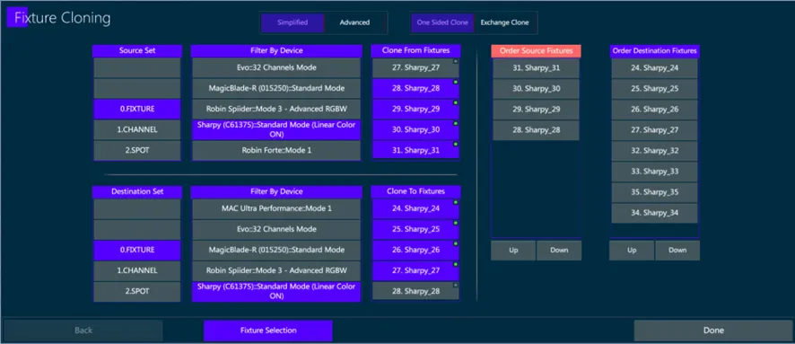
Choose the order of source fixtures on the left column and the order of destination fixtures on the right column, then press Done.
Vibe will provide a smart fixture cloning keeping the fixtures’ data as similar as possible.
Selection Rules:
All source fixtures must be of the same type.
All destination fixtures must be of the same type.
Many fixtures can be cloned to many fixtures, but the amount must be the same.
It is possible to select 1 source and many destinations.
The fixture cloning operation is not reversible, so there is no undo once hitting the DONE button.
Exchange Clone
The Cloning option on the top can be set as a one sided or a two-sided clone.
A one-sided clone copies the stored data from the source to the destination fixtures only.
A two-sided clone, called Exchange Clone, makes a smart replacement of data from the source fixtures to the destination fixtures and vice versa.
Advanced Clone
The Advanced fixture cloning option on the top enables access to a pair of Next popup windows where the matching parameters can be filtered, forced, and customized by the user.
The next step shows the Parameter Selection window.
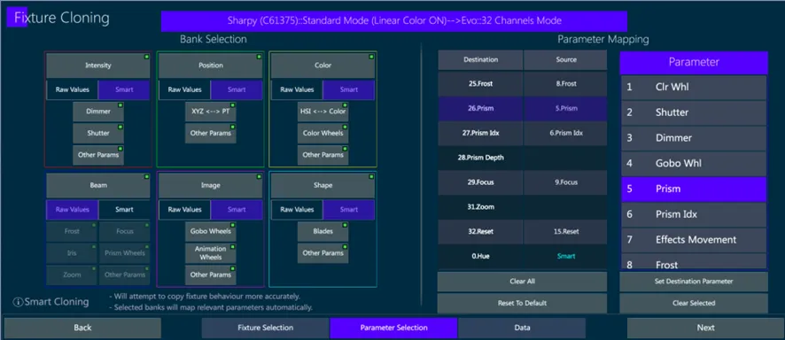
The cloning can be based on raw values, preserving the parameters’ levels, or on smart values, preserving the fixture’s functions. Raw values means that Vibe will match between parameter types and copy the raw value. Smart means that Vibe will try to find the real data information of the parameter and convert the values to match the destination fixture to look the same. Default is Smart.
On the right side there is a match table between the source and destination fixtures parameters. This table is dynamic and shows the data set from the left side. User can also change matching parameters manually, but this is only to very special cases and anyway it is not recommended. SMART will anyway overrule the table in case there is a parameter that is included in the smart.
The next step shows the Data window.
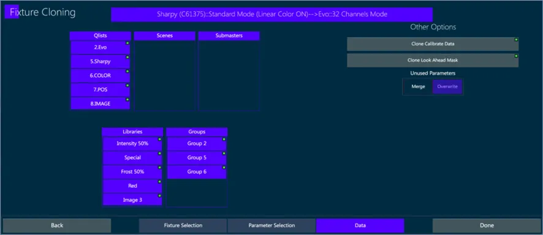
The Data window permits to filter the Groups, Libraries, Qlists, Scenes and Submasters, to apply the cloning only to the selected contents. Default is that all are selected.
NOTE: on the exchange option, these lists will show objects from both source and destination fixtures.
There is an option to clone the calibration data, so the destination fixture will get the same location coordinates as the source fixture. Default is Disabled, because in real world 2 fixtures cannot have the same physical position, but can be enabled, for example in case of fixture switches or if working on a 3D visualizer trying different lighting setups on the same rig.
There is an option to clone the look ahead mask so if the source fixture is in the mask, then the destination fixtures will also be in the mask. Default is Enabled.
There is an option to choose what to do with the parameters of the destination fixtures that are not included in the clone because they were not matched or any other reason. Merge means to keep these values, overwrite will delete the values. Default is Overwrite.
5.9 Replace
Vibe has smart and advanced device replacement.
The Device replacement feature allows to replace a device with another one, keeping all the matching data stored.
To open the device replacement popup, press the dedicated button in Patch page’s Editor Toolbar.
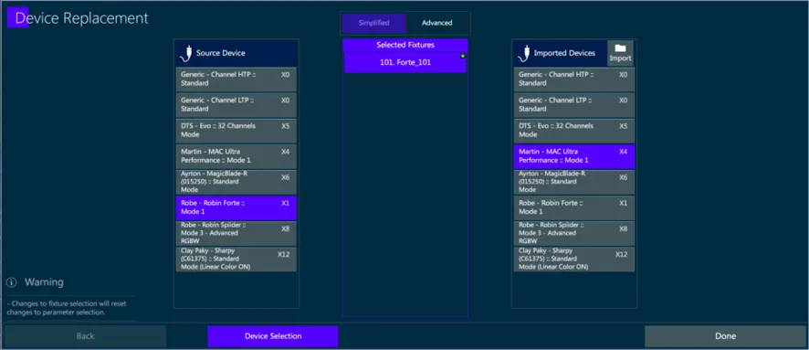
Choose the Source device on the left column and the new device from the Imported Devices on the right column, then press Done.
Vibe will provide a smart device replacement keeping the fixtures’ data as similar as possible.
The device replacement operation is not reversible, so there is no undo once hitting the DONE button.
Advanced Replacement
The Advanced replacement option on the top enables access to a Next popup window where the matching parameters can be filtered, forced and customized by the user.
The next step shows the Parameter Selection window.
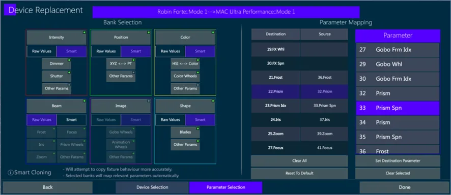
Each bank has its option to enable/disable. Enabled means it will be included in the Device replacement and disabled means it will not be included. Default is enabled.
The replacement can be based on raw values, preserving the parameters’ levels, or on smart values, preserving the fixture’s functions. Raw values means that Vibe will match between parameter types and copy the raw value. Smart means that Vibe will try to find the real data information of the parameter and convert the values to match the destination fixture to look the same. Default is Smart.
On the right side there is a match table between the source and destination fixtures parameters. This table is dynamic and shows the data set from the left side. User can also change matching parameters manually, but this is only to very special cases and anyway it is not recommended. SMART will anyway overrule the table in case there is a parameter that is included in the smart.
5.10 Calibration
Calibration Data give to the Vibe all the information regarding the fixture positioning on the stage, defined by X, Y, Z coordinates and Rotations around the axes, based on the point identified as stage center.
{Fixture Calibration} key on the Patch Toolbar opens a popup used to calibrate the fixtures through the XYZ coordinates, that may be either taken from a 3D Visualizer or from a real measurement.
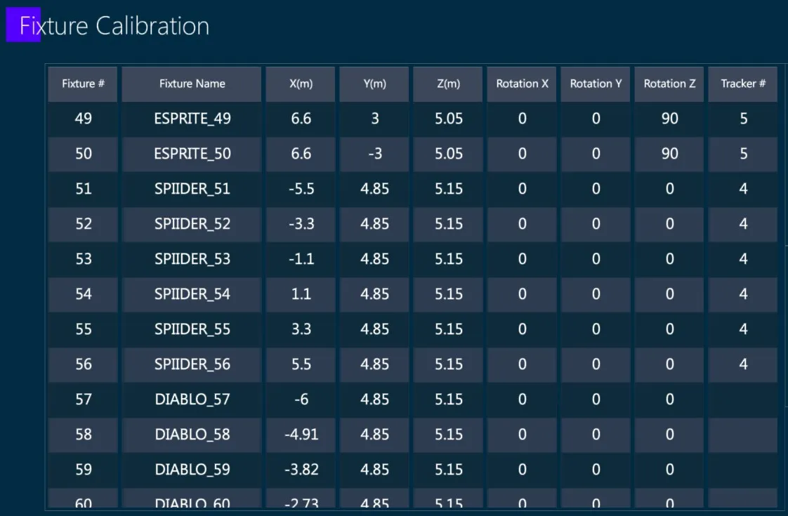
When fixtures are properly calibrated it is possible to specify a stage point on Vibe xyz position picker to automatically point all the fixtures on it.
Another advantage of the fixture calibration is to speed up the creation of topographical views (Topo).
There are a few passages to get the calibration data of the fixtures from third party software, that depend on which visualizer is used.
5.10.1 Import CSV
Most of the 3D visualizers on the market feature a process to export a table of the fixture coordinates into a .csv file.
After exporting the CSV containing the fixtures’ positioning coordinates from the visualizer, the .csv file table should be prepared in order to match the column’s order to Vibe and import the Calibration Data.
Instructions for Loading an External Fixture Calibration
Before beginning, the user must prepare the calibration data in CSV format.
The file should include the following columns in the specified order:
A - # – The fixture ID number in the Visualizer, or the Fixture Name, or leave empty (this field is ignored by the CSV Import process. It may contain anything that helps the user to match the source fixture list to the Vibe fixtures)
B - ID – The fixture number in Vibe
C - X – The X coordinate of the fixture’s position in meters
D - Y – The Y coordinate of the fixture’s position in meters
E - Z – The Z coordinate of the fixture’s position in meters
F - RotX – The X value of the fixture’s rotation, in degrees
G - RotY – The Y value of the fixture’s rotation, in degrees
H - RotZ – The Z value of the fixture’s rotation, in degrees
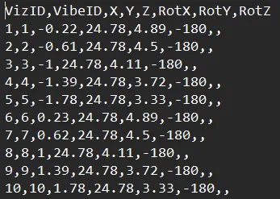
Notes:
The 1st line with column headers is not important, but the order of the columns must be exactly as listed above.
Empty fields are considered as 0 (zero) values.
Eventual additional columns must be deleted.
Once the CSV file is ready, move it to the following directory in the Vibe installation:
vibe/compulite/userdata/
To import the calibration data in Vibe:
Open a Patch page.
Click the “Fixture Calibration” button on the taskbar.
Click the “Import Calibration Data” button.
Use the file explorer to select your CSV file and click OK.

A popup will appear displaying the data read from the CSV file.
Rows where Vibe could not match the fixture number to an existing fixture will not be shown.
The data may be edited within the popup before applying it.
Click OK to apply the calibration.
5.10.2 Wysiwyg
As an alternative to the CSV import, calibration data may be manually copied from Wysiwyg.
On Vibe, go to [PATCH] page and tap on {FIXTURE CALIBRATION}.
Tap on {Stage} button and set the stage dimensions.
On Wysiwyg, specify the drawing origin point at the center of the stage. For this, it will be necessary to work in the CAD tab using the TOP view. Press on the top left corner (that connects the vertical ruler and the horizontal ruler – (see Blue Frame) and select the option of ’Mover Ruler (Set View Origin)ʼ.
Select the center of your stage (see Red Arrow in the Picture)
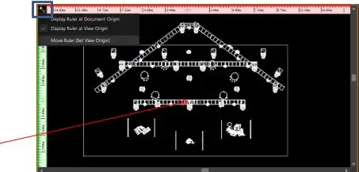
- Go to ‘Data tab’, press Option on the toolbar ⟶ Document Options ⟶ Draw Defaults - and change the units to metric.
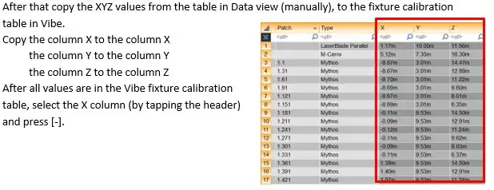
- Copy these values to the Fixture calibration table in Vibe:
the column X to the column X,
the column Y to the column Y,
the column Z to the column Z.
After all values are in the Vibe fixture calibration table, select the X column (by tapping the header) and press [-].
Fixtures are now calibrated.
5.10.3 Capture
As an alternative to the CSV import, calibration data may be manually copied from Capture.
On Vibe, go to [PATCH] page and tap on {FIXTURE CALIBRATION}.
Tap on {Stage} button and set the stage dimensions.
On Capture, place the center of the stage in the intersect point of the 2 Bold Axis, when the CAD displays a view from the Top
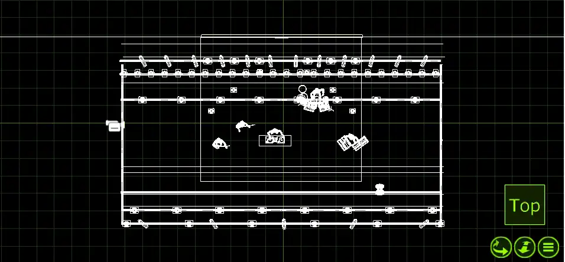
Go to Tools ⟶ Options and change the measurements to metric.
Select a fixture in Capture to see the XYZ coordinates when the table is showing ’Selected Itemsʼ.
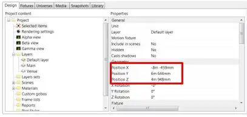
- Copy these values to the Fixture calibration table in Vibe:
the column X to the column X,
the column Y to the column Z,
the column Z to the column Y.
After all values are in the Vibe fixture calibration table, select the X column (by tapping the header) and press [-], and select the Y column and press [-].
Fixtures are now calibrated.
5.10.4 L8
As an alternative to the CSV import, calibration data may be manually copied from L8.
On Vibe, go to [PATCH] page and tap on {FIXTURE CALIBRATION}.
Tap on {Stage} button and set the stage dimensions.
On L8, go to ROOM environment and set the ‘World Center’ to define the center of the stage. Eventually an object with zero-sized dimensions can be created and set as world center. Ensure that the measurement is set on metric.
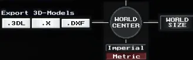
Go to DMX environment. All the fixtures’ coordinates are now based on the world center.
Select a fixture in L8 from the list on the left side of the screen to see the XYZ coordinates.
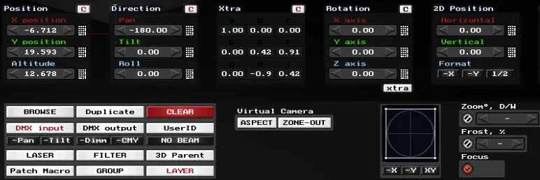
- Copy these values to the Fixture calibration table in Vibe:
the column X to the column X,
the column Y to the column Z,
the column Z to the column Y.
- Fixtures are now calibrated.
5.11 Trackers
Vibe Trackers are virtual objects that can be created and patched to the trackers of the supported incoming protocols in order to get the position coordinates of a tracked person/object on the stage and make fixtures automatically follow it.
Trackers may be created, named and patched on the Trackers View.
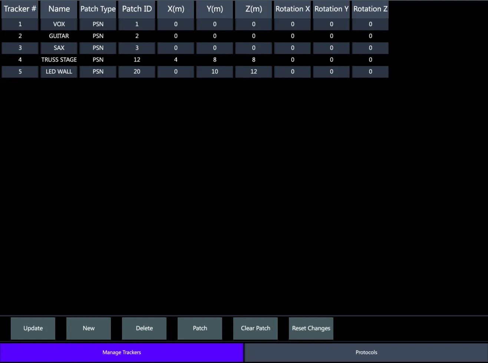
Once changes to the trackers have been made, press Update to apply them.
The Protocols Tab of the Trackers View shows the trackers connected to the system, divided per protocol.

Currently the only supported tracking protocol is PSN (PosiStageNet).
The Position Picker on the Smart Screen, in the XYZ mode, shows a column where the Trackers are listed and may be selected.
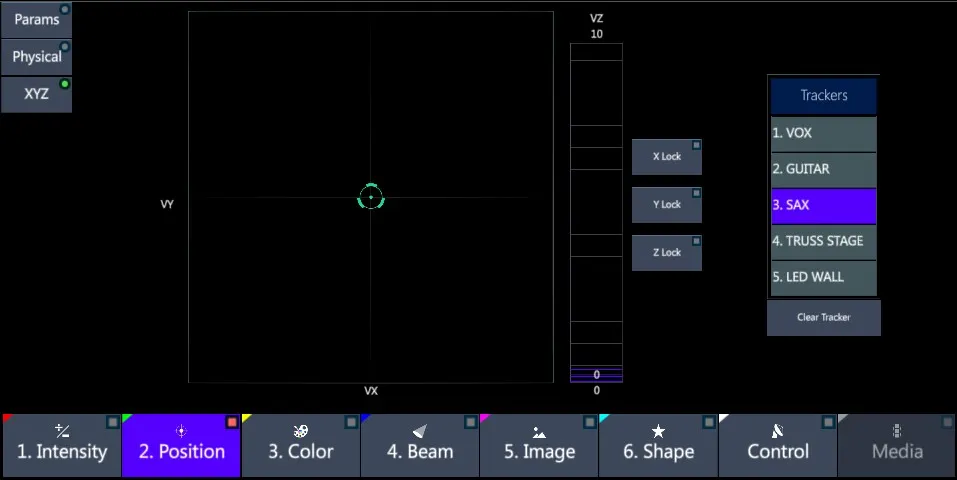
To assign the selected fixtures to the Tracker tap on the tracker in the list and the Vxyz coordinates will be grabbed in Editor, pointing to the tracker.
Trackers position values can be stored as usual into Libraries, Scenes and Cues and programmed in the same way of any other parameter.
The fade time between position values coming from trackers and from stored values can be managed like any other system, library, scene and cue timing.
Trackers may also be used to automatically update the fixtures’ calibration data of hanged fixtures, based on the position where the fixtures are mounted and their offset from the object center (the structure point that originates the coordinates of the trussing system, where the tracker is mounted).
Once the Trackers have been patched in the Trackers view, simply link the fixtures to the related tracker by adding the tracker’s number in the column of the Fixture Calibration popup.
The fixtures’ position will then be determined by the tracker’s input, while the other calibration columns (XYZ coordinates and Rotation angles on the 3 axes) will define the offsets of distance and angles of the fixture from the tracker.
5.12 Auto-Patch
Vibe can automatically get the device list, fixture patch and calibration data, by loading and converting an MVR show file.
As an alternative to the MVR show import, Vibe integration with some visualizers allows to automatically get the fixtures’ information by establishing a specific network connection with the third party software, that depends on which visualizer is used.
5.12.1 Wysiwyg
Auto Patch from Wysiwyg may be done by installing the Compulite - Wysiwyg driver.
First download the Compulite driver for Wysiwyg from: http://www.compulite.com and then install the driver:
Run the file CompuliteWYSIWYG_DriverSetup.exe.
Read the licence terms and click I Accept to continue.
Choose the Compulite consoles for which the driver will install.
After reading the information displayed, tap INSTALL.
Tap FINISH.
The computer running the Wysiwyg software must be configured to the same subnet as the Compulite console.
Use the Data port to connect to the PC running Wysiwyg (On Vibe PC use any Ethernet port).
Enable VC transmission on Vibe.
After completing the patch procedures in Wysiwyg, establish the connection between the console and the Wysiwyg application.
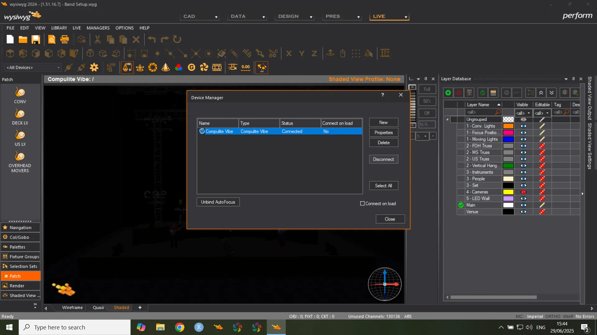
In the Wysiwyg application, click the Live tab.
Open the Live menu.
Choose Device Manger.
Click New.
Search for your Console by using the search bar or by expanding the Consoles -> Manufacturer nodes and choosing Compulite.
Click Insert.
Click on the console and choose Properties. In the protocol field make sure “Compulite VC” is selected.
In the Address field, enter the console’s IP address.
Bind Wysiwyg Universes to Vibe output ports. Under Universe, click to open drop selection and select a Wysiwyg universe. Do so for every port you wish to bind. Alternatively select multiple rows and click “Assign”, then select a Wysiwyg universe to bind all selected ports.
Close the properties window.
Click Connect.
Verify that the status now shows Connected.
Click Close.
A popup will show that a Wysiwyg client is now connected.
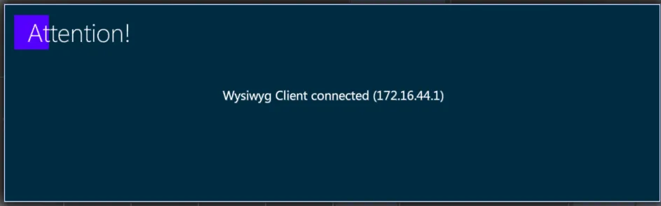
Use Wysiwyg Auto Patch feature:
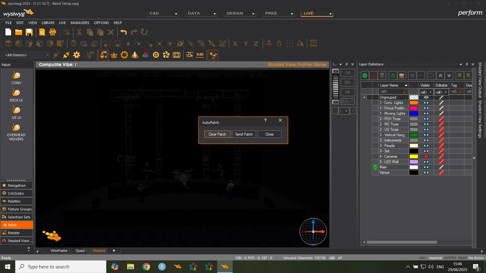
In the Wysiwyg application, click the Live Wysiwyg tab.
Open the Live menu.
Choose Auto Patch.
Click Send Patch.
Click Close, to close the dialog box.
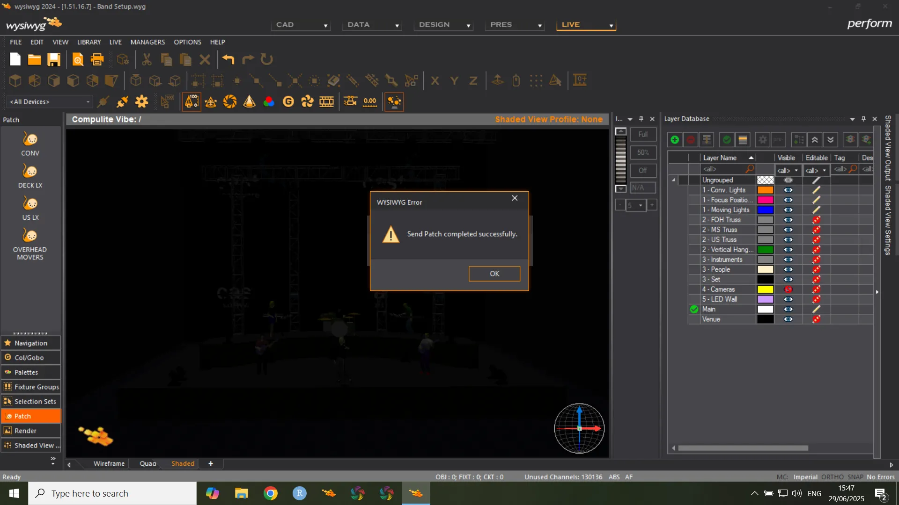
A popup on the Vibe screen will ask to accept the autopatch from Wysiwyg. Tap Apply.
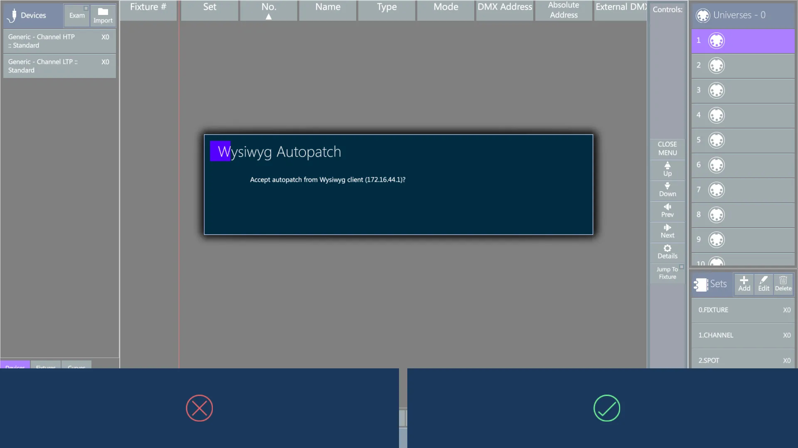
A popup on the Vibe screen will ask to save the current show file.
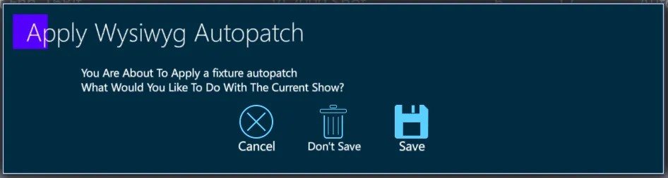
A popup on the Vibe screen will show the matched devices and allows to match them in a different way or to built the unmatched ones as new devices.
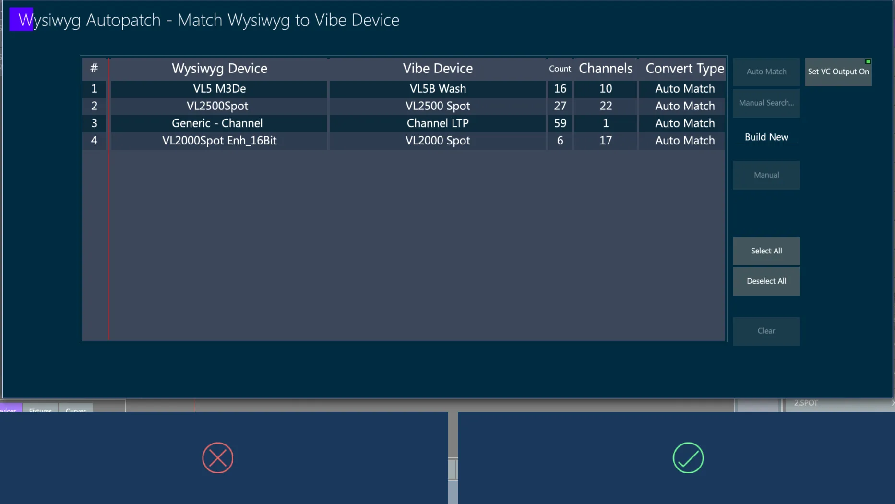
When all the devices are matched, tap Apply and the convert process will start.
5.12.2 Capture
Auto Patch from Capture may be done via the CITP protocol.
It is possible to sync the show from Capture. In order to do that, set the Capture CITP settings to use Standard Multicast and select the relevant IP address.
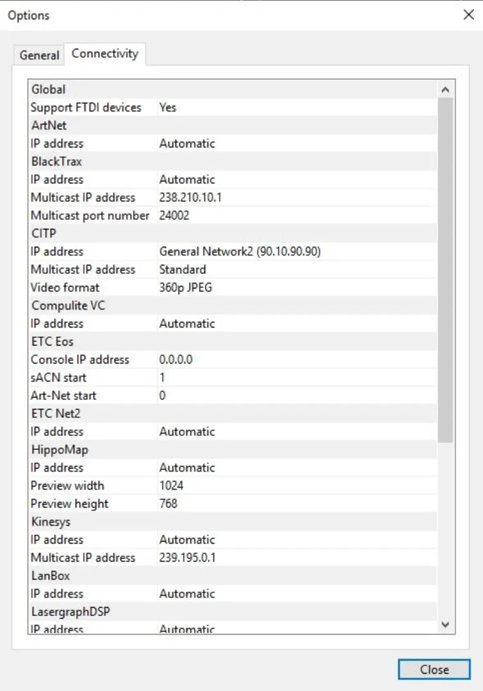
In addition, make sure Vibe and Capture are on the same subnet.
After finishing preparing the show on Capture, go to Vibe, open the CITP popup, enable CITP and connect to Capture from the Visualizers tab.
Then Get Data from Capture and Vibe will be ready to go.